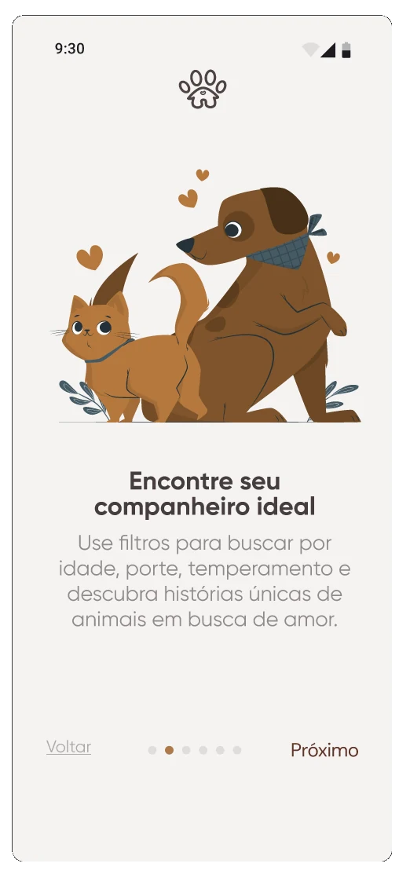
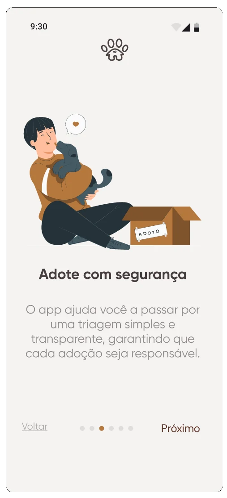
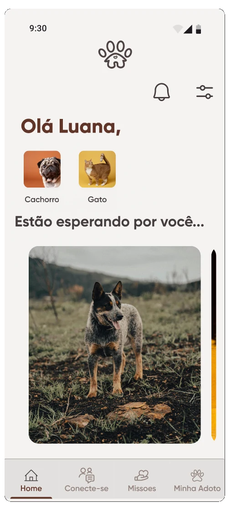
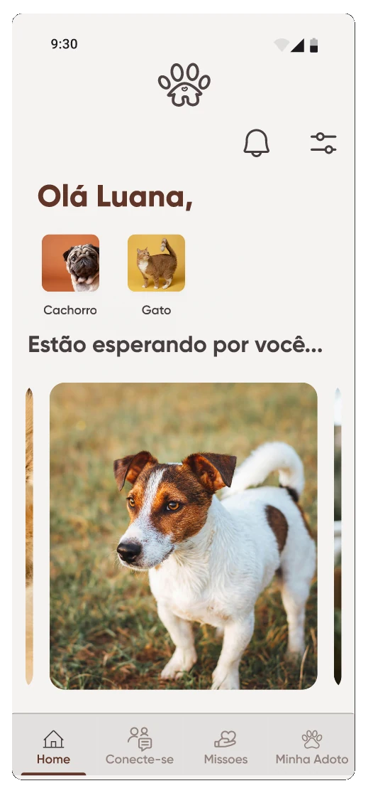
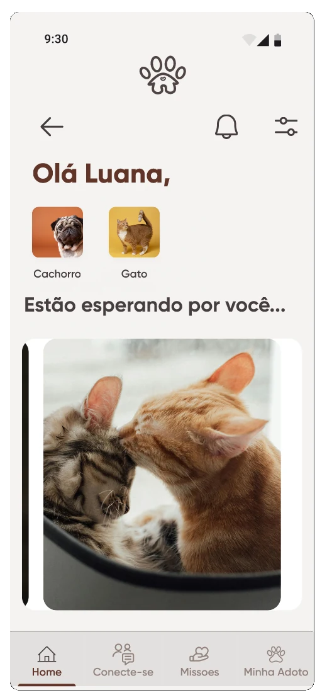
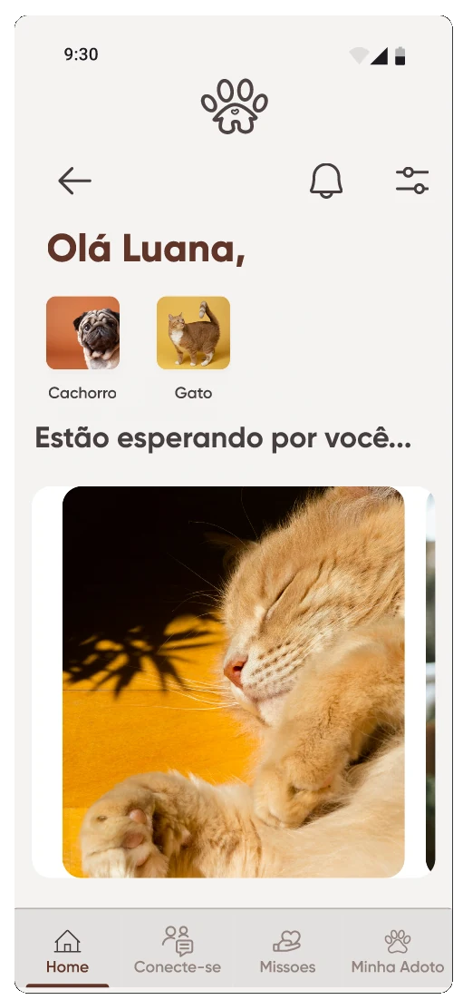

Adotar é só o começo.
A ideia que guiou o projetoPor que o pós-adoção importa
O trabalho das ONGs de adoção é enorme e, muitas vezes, invisível. Dois desafios apareceram logo no início: dar mais visibilidade à ONG e fazer com que as adoções realmente se sustentem depois que o animal vai para casa.
Por isso, o objetivo do projeto foi aumentar a visibilidade da ONG e a aderência das adoções, com impacto social como foco central.
Entendendo as dificuldades de quem acabou de adotar
Mapeamos as principais dificuldades enfrentadas por recém-adotantes. A pergunta central era separar o que é o quê, porque cada tipo de problema pede uma resposta diferente:
Adaptação
Situações ligadas ao período de acostumar o animal e a família à nova rotina.
Dificuldade médica
Casos que precisam de orientação veterinária e não podem ser tratados como algo comportamental.
Ajuste
Questões simples de manejo do dia a dia, que se resolvem com uma orientação rápida.
Conte como fez esse mapeamento: entrevistas, conversas com a ONG, relatos de adotantes? Quantas pessoas?
O que o Adotô oferece
Compatibilidade
A pessoa informa as suas características e as da sua casa, e o app mostra os pets compatíveis com esse perfil.
Atendimento pós-adoção
Uma estrutura de atendimento rápido, desenhada em conjunto com a ONG, para orientar o adotante nas dúvidas dos primeiros dias.
Fotos e vídeos estruturados
Um padrão de registro dos animais para que o adotante conheça melhor as características de cada um antes de decidir.






Navegue pelo protótipo
Veja o fluxo do app do jeito que as pessoas usaram no teste.
Como validei o produto
Objetivo e participantes
O que queriam validar, quantas pessoas participaram e o perfil delas.
Tarefas
O que foi pedido no protótipo (ex.: buscar um animal, pedir ajuda pós-adoção).
Aplicação
Presencial ou remoto, e como registraram o que observaram.
O que o teste mostrou
Achado 1
Problema observado, com a evidência (ex.: 3 de 5 pessoas não encontraram o atendimento).
Achado 2
Problema observado, com a evidência.
O que funcionou bem
Ponto positivo que deve ser mantido.
O que mudou no app
Ajuste feito a partir do teste.
Foi um projeto que me fez admirar ainda mais o trabalho das ONGs de adoção. Se eu fizesse de novo, visitaria mais ONGs desde o começo, para entender o contexto geral e as principais dores de quem cuida dos animais, e não só de uma realidade.